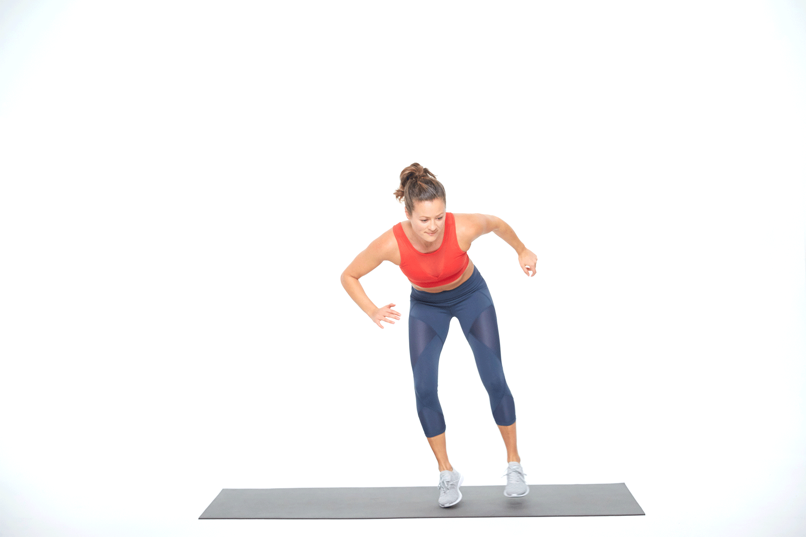
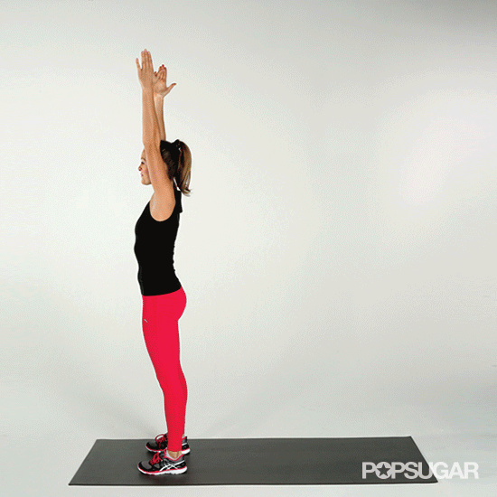
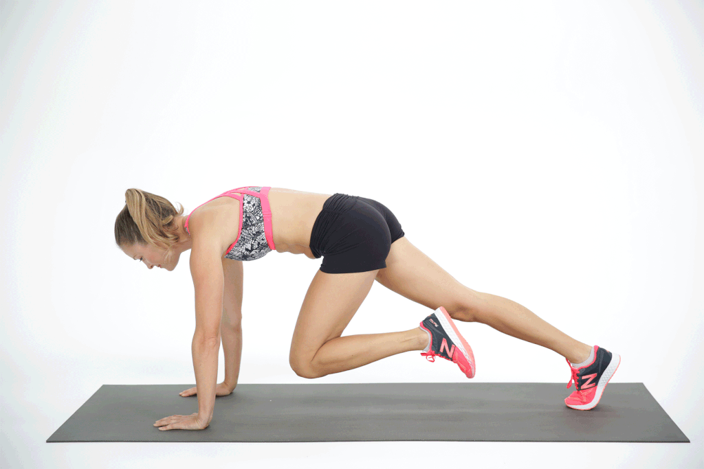
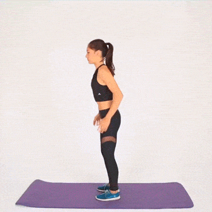

| EJERCICIOS | COMO SE HACE | VISUALIZACION |
|---|---|---|
| Lateral Shuffle Taps | De pie en una posición atlética, con los pies más separados que la distancia entre las caderas, arrastra el pie un par de pasos hacia la izquierda y luego toca el suelo |
 |
| Rollbacks | Comienza de pie. Con un solo movimiento, siéntate en el suelo y rueda hacia atrás, llevando las caderas y los talones hacia el techo. Vuelve a poner los pies en el suelo y a ponerte de pie. |
 |
| Escaladores | Comienza con una plancha alta, con los hombros sobre las muñecas, las caderas hacia el ombligo y las costillas hacia las caderas. Lleva una rodilla hacia tu pecho y luego la otra |
 |
| Sprints | Corre hacia el primer cono, tócalo y vuelve a la posición inicial. Luego corre hasta el segundo cono y vuelve a empezar. |

|
| Burpees | : Comienza en posición de sentadilla, con los pies separados al ancho de los hombros. Deja caer las caderas y coloca las palmas en el suelo, luego salta con los pies hacia atrás y baja tu cuerpo hasta el suelo. Ponte de pie y luego salta con los pies hacia delante para volver a la posición de sentadilla. |
 |